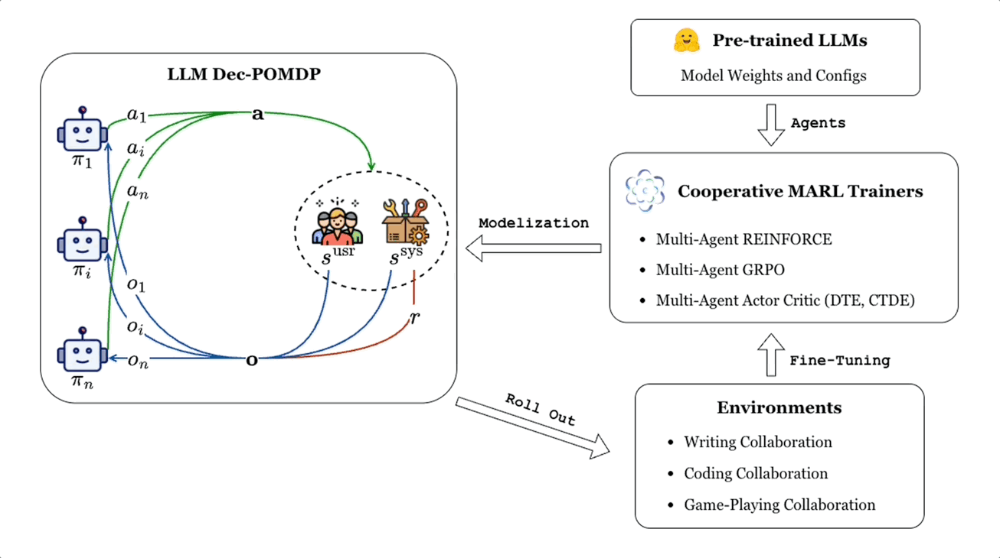
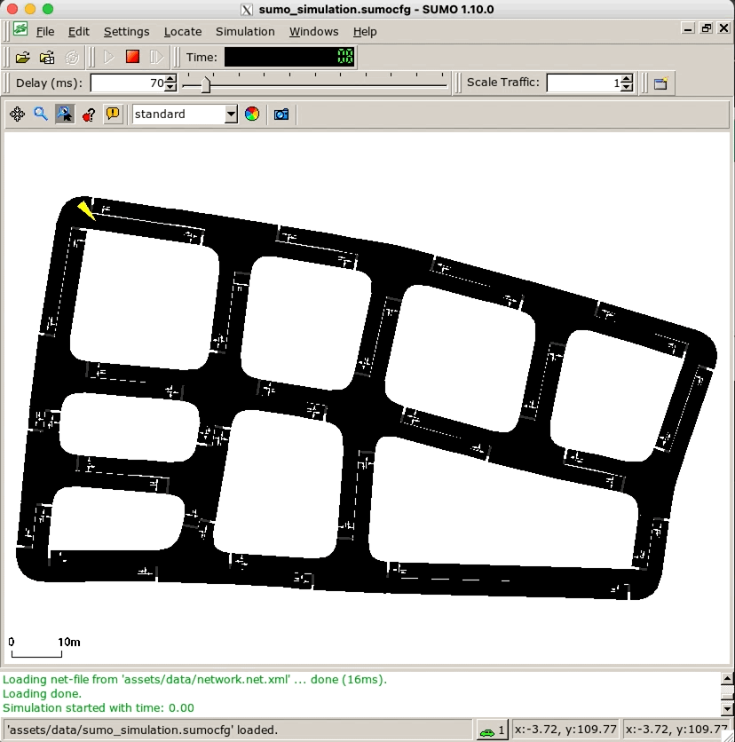
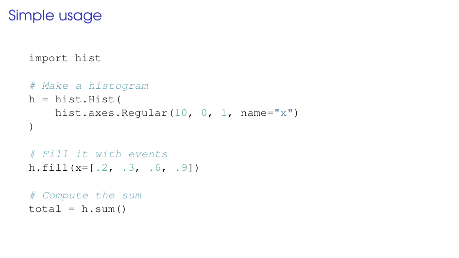

CoMLRL is an open-source library for training multiple LLMs to collaborate using Multi-Agent Reinforcement Learning. It provides implementations of MARL algorithms for LLM collaboration and supports different environments and benchmarks.

SUMO-Gym is a Gym-style toolkit for the benchmarking and development of reinforcement learning methods in SUMO.

Hist is a powerful Histogramming tool for analysis based on boost-histogram (the Python binding of the Histogram library in C++ Boost). Based on boost-histogram, it is an analysis-oriented tool that provides plotting tools, shortcuts, and new ideas.
